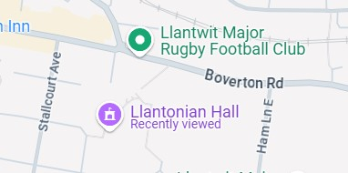

PENLLYN BRIDGE
The Bridge Club was founded on 2nd April 1992 as the Llandow Bridge Club. The club relocated to Penllyn village hall in 1995, becoming the Penllyn Club in 1996. The first Director was Robert Brown and the cup bearing his name is keenly contested each year by all members. The aim of the club is to provide a regular facility for Duplicate Contract Bridge in a welcoming and friendly environment for players of all standards
Committee
Chairman: Allan Evans
Treasurer: Jane Frampton
Secretary: Marian East
Nuisancess: Andy Dick, Colin Nunn

The Penllyn Village Hall is situated in Penllyn village just north of the A48 and west of Cowbridge.
Te annual membership fee is at presennt £50. There is no Table charge for members, however, visitors pay £4 for each session.
The club meets on Thursday evenings at 6.45, with play starting at 7.00 and aiming to finish by 10.00. There are also two party evenings each year.